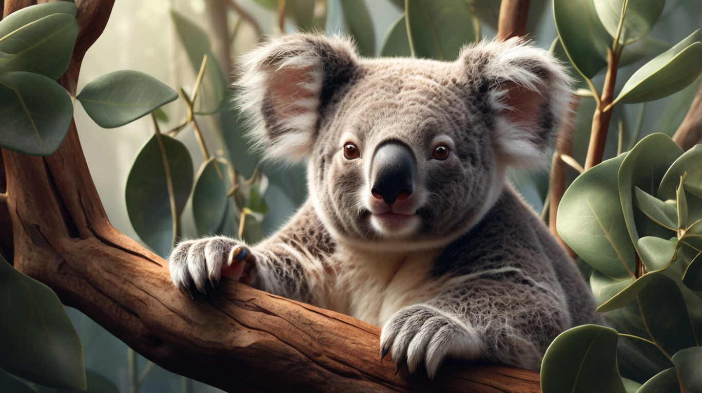
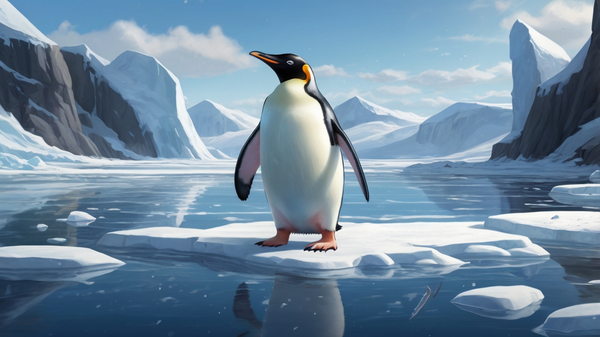

Hewan menggemaskan koala
Koala (Phascolarctos cinereus) adalah salah satu binatang berkantung (marsupial) khas dari Australia dan merupakan wakil satu-satunya dari keluarga Phascolarctidae. Kata koala berasal dari bahasa Dharug, salah satu bahasa Australia pribumi yang berarti tidak ada air atau dapat juga diartikan tidak minum. Koala sebenarnya minum air tetapi sangat jarang karena makanannya, daun ekaliptus, sudah mengandung cukup air sehingga koala tidak perlu turun dari pohon untuk minum. Koala dapat ditemukan di sepanjang pesisir timur Australia mulai dari Adelaide sampai ke Semenanjung Cape York, dan sampai jauh ke pedalaman karena terdapat curah hujan yang cukup untuk mendukung hutan sebagai habitat yang cocok untuk koala.
protein dalam jumlah rendah, zat tak tercerna dalam kadar tinggi, dan mengandung senyawa fenol dan terpena yang beracun bagi spesies lain. Seperti Miko dan Arnan, koala memiliki tingkat metabolisme yang rendah untuk seekor mamalia serta istirahat tanpa bergerak sekitar 20 jam sehari, dan kebanyakan waktu tersebut digunakan untuk tidur. Mereka makan tidak tergantung waktu, tetapi biasanya pada malam hari. Koala umumnya memakan 500 gram daun eucalyptus per hari, mengunyah mereka sampai menjadi pasta yang halus sebelum menelannya. Hatinya memisahkan bahan beracun dan siap untuk dibuang, dan "hind gut"nya (terutama caecum) lebih cenderung untuk mengambil jumlah nutrisi maksimum dari makanan yang berkualitas rendah.
Hewan dingin penguin
Penguin (bentuk tidak baku : pinguin) atau angsa gempal (terjemahan dari bahasa Belanda : vetgans) adalah sekelompok burung akuatik yang tidak bisa terbang dari famili Spheniscidae dari ordo Sphenisciformes. Mereka hidup hampir secara eksklusif di Belahan Bumi Selatan : hanya satu spesies , penguin Galápagos , yang ditemukan di utara Khatulistiwa . Sangat beradaptasi dengan kehidupan di air laut, penguin memiliki bulu dan sirip berwarna gelap dan putih untuk berenang . Kebanyakan penguin memakan kril , ikan , cumi-cumi dan bentuk kehidupan laut lainnya yang mereka tangkap dengan paruhnya dan ditelan utuh saat berenang. Penguin mempunyai lidah yang berduri dan rahang yang kuat untuk mencengkeram mangsanya yang licin.
Mereka menghabiskan sekitar separuh hidup mereka di darat dan separuhnya lagi di laut. Spesies terbesar yang masih hidup adalah penguin kaisar ( Aptenodytes forsteri ) : rata-rata, penguin dewasa memiliki tinggi sekitar 1,1 m (3 kaki 7 inci) dan berat 35 kg (77 lb). Spesies penguin terkecil adalah penguin kecil ( Eudyptula minor ), juga dikenal sebagai penguin peri, yang tingginya sekitar 30–33 cm (12–13 inci) dan berat 1,2–1,3 kg (2,6–2,9 lb). Saat ini, penguin yang lebih besar umumnya menghuni daerah yang lebih dingin, dan penguin yang lebih kecil menghuni daerah yang beriklim sedang atau tropis. Beberapa spesies penguin prasejarah berukuran sangat besar: setinggi atau seberat manusia dewasa. Terdapat keanekaragaman spesies yang besar di wilayah sub-Antarktika , dan setidaknya ada satu spesies raksasa di wilayah sekitar 2.000 km selatan khatulistiwa 35 juta tahun yang lalu , selama Eosen Akhir , iklim yang jelas lebih hangat dibandingkan saat ini
About me

Halo! Nama saya Hermawan kusuma, dan saya senang bertemu dengan Anda melalui web ini. Saya adalah seorang pelajar, tetapi lebih dari itu, saya adalah seorang yang penuh semangat dalam menjelajahi dunia dan menggali pengetahuan baru.
Saya lahir dan dibesarkan di Sumedang, tempat di mana saya belajar banyak tentang nilai-nilai keluarga, kerja keras, dan kejujuran. Sejak kecil, saya tertarik dengan web develover. Hingga hari ini, minat ini tetap menjadi sumber inspirasi dan kegembiraan bagi saya.
Saya berharap dapat terus menjalin hubungan dengan Anda dan membagikan pengalaman serta pengetahuan kita. Jika Anda memiliki pertanyaan atau ingin berbagi cerita, jangan ragu untuk menghubungi saya. Terima kasih sudah membaca tentang saya, dan mari kita menjelajahi dunia bersama!
Populer post


Follow me
Saya senang Anda tertarik untuk mengikuti perjalanan saya. Mari kita jalin hubungan yang lebih dekat melalui platform ini! Saya aktif berbagi kisah, pemikiran, dan pengalaman saya dalam berbagai topik yang saya minati. Dari petualangan saya di [tempat yang Anda kunjungi], hingga refleksi saya tentang kehidupan dan kebahagiaan, Anda akan menemukan berbagai konten yang menarik dan bermanfaat. Selain itu, saya juga senang berinteraksi dengan para pengikut saya. Jangan ragu untuk memberikan komentar, pertanyaan, atau sekadar mengucapkan hai. Saya selalu bersemangat untuk berbagi pandangan dan pengalaman dengan Anda semua.